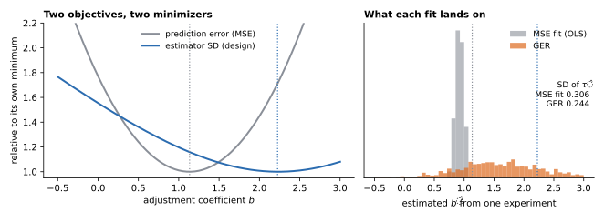
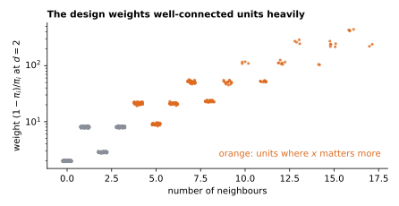
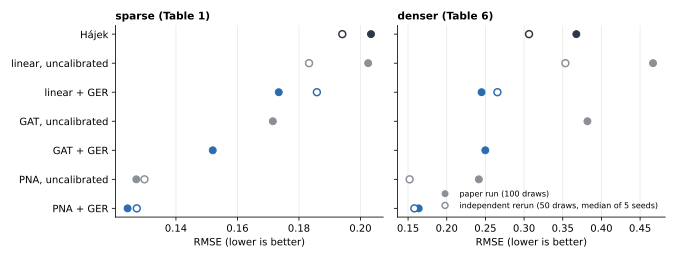
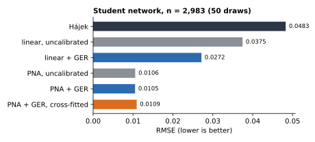
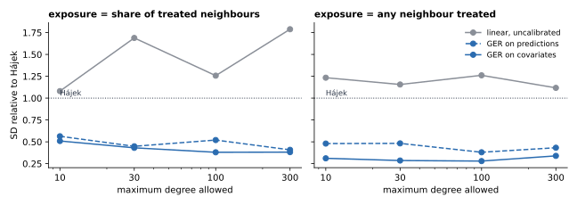
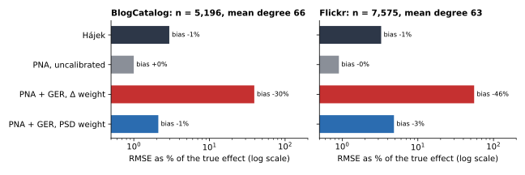
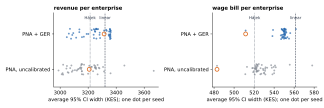

Suppose you run a randomized experiment on a social network: some people receive an intervention, and you want to know how much it matters, for them and for their friends. Because outcomes spill over along edges, the analysis has to account for each person's exposure, a summary of their own and their neighbours' treatments. Randomization still gives you an unbiased estimator for free. What it does not give you is precision, and with a few hundred or a few thousand units, precision is usually the binding constraint.
The standard way to buy precision is regression adjustment: predict each unit's outcome from covariates, and let the estimator correct only the part the model gets wrong. The natural instinct is to make the prediction as good as possible. Under interference this instinct is subtly wrong, and the figure above shows why: the coefficient that minimizes prediction error and the coefficient that minimizes estimator variance can be far apart.
In this article we explain where that gap comes from, describe a simple calibration step that closes it without needing the unknown optimum, and walk through five experiments, including two where the calibration does not help and one where it fails outright.
1. Randomization makes any adjustment unbiased
We have $n$ units on a graph $G$, each randomly treated ($A_i \in \{0,1\}$). An exposure mapping turns the treatment vector into a discrete exposure $D_i$ for each unit, for example "the share of my neighbourhood that is treated, cut into low, medium, high". We assume each unit's outcome depends on treatments only through $D_i$, so unit $i$ has one potential outcome $Y_i^{(d)}$ per exposure level, and we want the average contrast $\tau = \frac1n\sum_i \big(Y_i^{(d_1)} - Y_i^{(d_2)}\big)$.1
Because the treatment is randomized by us, the probability $\pi_i^{(d)} = \Pr(D_i = d)$ is known (we compute it by simulating the design). That makes the augmented inverse-probability-weighted (AIPW) estimator available:
The correction term has expectation $Y_i^{(d)} - f_i^{(d)}$ under the design, whatever $f$ is, so $\hat\tau$ is unbiased for any prediction $f$: a linear model, a random forest, a graph neural network, or zero. No modelling assumption is needed for validity. The prediction only decides how noisy the estimate is.
With a randomized design, the outcome model is not about bias. It is purely a variance-reduction device.
So which prediction gives the smallest variance?
2. The variance weights residuals by the design, not equally
Write $f_i^{(d)} = F_i^{(d)\top}\beta$ for some features $F$ (covariates, or a model's predictions, or a network's learned representation). Stack the residuals at the two exposure levels into one vector $r(\beta)$ of length $2n$. The variance of the AIPW estimator is then exactly a quadratic form:
The matrix $\Lambda$ is the covariance of the reweighted exposure indicators $\mathbb 1(D_i=d)/\pi_i^{(d)}$; it depends only on the graph and the randomization. Two features of it matter:
- Unequal diagonal. Unit $i$'s own residual is weighted by $(1-\pi_i)/\pi_i$. Units that rarely reach an exposure level get large weights.
- Off-diagonal pairs. Two units whose exposures are dependent (in practice: units within two hops, which share a neighbour) contribute a cross term. Their residuals can add up or cancel.
Prediction error, by contrast, is $r^\top r$: every unit counts once and pairs do not interact. The two objectives coincide only when $\Lambda$ is proportional to the identity, which is roughly the no-interference, equal-probability case. On a network it is far from that.

That is the whole mechanism behind the hero figure. Our toy experiment has $995$ units on a sparse random graph (mean degree $2.8$), Bernoulli(1/3) treatment, and the outcome $Y_i = s_i x_i + \text{noise}$, where the slope $s_i$ is $3.0$ for units with at least four neighbours and $0.3$ otherwise. We adjust with $f_i = b\,x_i$ and sweep $b$. Least squares wants the average slope; the variance wants the slope of the heavily weighted units.
Under interference, prediction error and estimator variance are two different weighted sums of the same residuals. Minimizing one does not minimize the other.
The obvious fix is to choose $\beta$ to minimize $r(\beta)^\top\Lambda\, r(\beta)$ directly. Can we?
3. Calibrating toward a variance we cannot compute
The variance-optimal coefficient is a weighted least-squares solution,
but it involves every unit's potential outcomes at both exposure levels, and we observe each unit at only one. We cannot compute $\beta^\star$. We can, however, estimate the two matrices it is built from.
The trick is to reweight what we do observe. For each feature, form the residualized, inverse-probability-weighted version $\hat R_k = F^{(d_k)}\,\mathrm{diag}\{\mathbb 1(D_i = d_k)/\pi_i^{(d_k)}\} - F^{(d_k)}$, and similarly a reweighted outcome contrast $\hat y$. These are noisy, but their products have the right expectation on the right pairs: for units $i,j$ whose exposures are dependent, $\mathbb E[\hat R_i \hat R_j]$ equals the corresponding entry of $F^\top\Lambda F$. So we sum products only over those pairs, which are recorded in a 0/1 dependency graph $\Delta$ (for exposures that depend on one-hop neighbours under Bernoulli assignment, $\Delta$ is just "within two hops"). This gives the graph-weighted exposure residualization (GER) equation:
Two properties make this practical. First, it needs only first-order probabilities $\pi_i^{(d)}$ and the graph, not the dense $n\times n$ matrix of joint probabilities. Second, it plugs into any predictor. We use it in two ways:2
- Calibrate predictions. Take $F_i = (1, \hat Y_i^{(d)})$ from any trained model. GER then fits only an affine rescaling of the model's output: two numbers per exposure level, so the system is small and well conditioned.
- Calibrate representations. Take $F_i = (1, H_i^{(d)})$, a network's last hidden layer. GER then refits the final layer. This is more flexible but much worse conditioned.
In code, the calibration step is a few lines on top of whatever model produced the features:
def ger(F1, F2, pi1, pi2, D, Y, Delta, d1, d2, rcond=1e-2):
"""F1, F2: n x p features at levels d1, d2; pi: known exposure probabilities."""
w1, w2 = (D == d1) / pi1, (D == d2) / pi2 # reweighted indicators
X = np.hstack([(w1[:, None] - 1) * F1, -(w2[:, None] - 1) * F2])
y = w1 * Y - w2 * Y # reweighted outcome contrast
A, b = X.T @ Delta @ X, X.T @ Delta @ y
return np.linalg.lstsq(A, b, rcond=rcond)[0] # truncated pseudoinverse
(Illustrative; our implementation follows the same steps.)
What we can prove. Under positivity (every $\pi_i^{(d)}$ bounded below at a polylogarithmic rate), bounded outcomes, a dependency graph whose maximum degree grows at most polylogarithmically, and a stability condition on the weighted second moments, $\hat\beta$ is consistent for $\beta^\star$; the calibrated estimator is asymptotically normal; and its asymptotic variance is no larger than that of any fixed coefficient on the same features, including the least-squares one and the "use the predictions as they are" choice $\beta = (0,1)$. A conservative variance estimator gives valid confidence intervals.3 These are asymptotic statements about a fixed feature set; they say nothing about how large the gain is in a given experiment, which is what the experiments below measure.
Back in the toy: across 1,000 simulated experiments the least-squares coefficient sits at $\hat b \approx 0.92$, while the GER coefficient has median $1.67$ (interquartile range $1.17$–$2.24$), noisier but pulled toward the variance optimum at $2.23$. The resulting effect estimates have standard deviation $0.244$ with GER and $0.306$ with least squares.
That is a constructed example. Does the gap show up in realistic settings, and does it survive a strong graph neural network?
4. Experiment 1: synthetic networks, and a rerun
Question. Starting from the same features, does calibrating reduce the error of the effect estimate, and how does that depend on how good the predictor already is?
Setup. $n = 2{,}000$ units on a synthetic graph with mean degree 3 (sparse) or 5 (denser), Bernoulli(1/3) treatment, exposure = share of treated neighbours in three bins, and the contrast "high vs. zero" (true $\tau = -0.594$). Outcomes depend nonlinearly on covariates, on degree and on neighbours' covariates; the adjustment sees only one of the three covariates plus the graph. We compare three backbones (a linear model, a graph attention network, and a principal neighbourhood aggregation network, PNA), each used uncalibrated (plug in the MSE-trained predictions) and calibrated with GER. Filled dots are the runs reported in the paper (100 randomizations). Because a single training run of a neural network can be lucky or unlucky, we later reran the main rows independently: 50 new randomizations, PNA trained with five seeds, median reported (hollow dots).4

What we see.
- Weak predictors gain the most. In the denser design, the uncalibrated linear adjustment is worse than no adjustment at all (Hájek): RMSE $0.467$ vs. $0.368$ in the paper run. After calibration it drops to $0.245$. The rerun confirms the direction ($0.357 \to 0.268$, Hájek $0.310$). The graph attention network goes from $0.382$ to $0.250$.
- A strong GNN gains little. PNA is the best backbone everywhere, and once it is used, calibration changes little. In the sparse design, $0.127 \to 0.124$ (rerun: $0.131 \to 0.129$).
- One large gain did not replicate. In the paper's denser run, calibration cut the PNA error from $0.242$ to $0.164$. In the rerun, uncalibrated PNA was already at $0.154$, and calibration did not improve on it ($0.160$). The large gap in the paper run reflects a weak PNA fit in that run, not a systematic effect.
- In the sparse design the linear gain is within noise in the rerun ($0.185$ vs. $0.188$), although the paper run shows $0.203 \to 0.173$.
Coverage of the 95% intervals for the calibrated estimators was 0.92–0.98 in the paper runs and 0.96–1.00 in the rerun.
GER behaves like a safeguard: it reliably repairs an adjustment that is badly aligned with the design, and it costs little when the predictor is already good. It does not turn a good GNN into a much better one.
These graphs are synthetic. What happens on a real social network?
5. Experiment 2: a real friendship network
Question. Do the same patterns hold on a real network, and does cross-fitting the GNN (training it on units whose exposures are independent of the ones it adjusts) cost precision?
Setup. The friendship network of 2,983 students from a school-climate field experiment (ICPSR 37070), mean degree about 2.5. Covariates are real; outcomes are simulated from them with spillovers through one- and two-hop neighbours (true $\tau \approx 0.46$). 50 randomizations, Bernoulli(1/3), contrast "high vs. zero".5

- Calibration cuts the linear adjustment's error by 27% ($0.0375 \to 0.0272$).
- PNA is more than four times as accurate as Hájek ($0.0106$ vs. $0.0483$), and calibration leaves it unchanged ($0.0105$).
- Cross-fitting costs almost nothing ($0.0109$), with coverage 0.98–1.00. Our guarantees are stated for features fixed in advance; cross-fitting is how we make learned features satisfy that. This graph's two-hop structure splits into 1,208 small components, so no training data is lost. On a graph that forms one giant two-hop component (our synthetic graphs), the buffer between folds discards most units and cross-fitting at least doubles the error. We have not found a good fix for that case.
So far the networks have been sparse with modest degrees. Our theory requires exposure probabilities bounded away from zero, which hubs violate. How much does that matter?
6. Experiment 3: hubs and vanishing probabilities
Question. When some units have hundreds of neighbours, the probability that, say, none of them is treated becomes astronomically small. Do the inverse weights blow up the calibrated estimator?
Setup. Heavy-tailed random graphs ($n = 2{,}000$, mean degree 3) with the maximum degree capped at 10, 30, 100 or 300; two exposure mappings (share of treated neighbours; "any neighbour treated"); 200 randomizations each. The smallest exposure probability falls to $7\times 10^{-20}$ and $5\times10^{-32}$, so our positivity assumption fails badly.

The calibrated intervals covered 0.955–1.00 of the time, while Hájek's covered only 0.80–0.90. Calibration cannot remove the huge inverse weights, but it shrinks the residuals they multiply. This is outside what our theorems cover, so it is an empirical finding about these graphs, not a guarantee.
Hubs in an otherwise sparse graph are fine. What if every unit is well connected?
7. Experiment 4: where calibration breaks, dense graphs
Question. On graphs where the average unit has dozens of neighbours, is the two-hop dependency graph $\Delta$ still a good stand-in for $\Lambda$?
Setup. Two standard attributed social graphs, BlogCatalog (5,196 nodes, mean degree 66) and Flickr (7,575 nodes, mean degree 63), with simulated outcomes as in Experiment 2 and the contrast "medium vs. zero" (which has good support: every unit has $\pi \geq 0.27$). 30 randomizations.6

Here two-hop neighbourhoods cover 48–58% of all pairs, and $\Delta$ is strongly indefinite (smallest eigenvalue $-330$ and $-891$). The GER equation is then a stationary point of an indefinite quadratic rather than a minimum, and the noisy estimate $\hat A$ no longer resembles $F^\top\Lambda F$. One possibility, which we have not verified, is that the error in $\hat A$ grows with the number of pairs it sums over and overwhelms the signal once that number is a constant fraction of $n^2$.
A simple repair is to replace $\Delta$ by the diagonal matrix of two-hop degrees, $\mathrm{diag}(\Delta\mathbf 1)$, which upper-bounds $\Delta$ in the positive semidefinite order.7 It removes the bias (−1% to −3% of $\tau$), but it gives up the cross-unit information that made calibration useful, and the uncalibrated PNA estimate, already three times more accurate than Hájek, remains the better choice.
GER is a method for sparse dependence. When two-hop neighbourhoods cover a sizeable fraction of the graph, use a positive semidefinite weight or the learned predictions as they are.
8. Experiment 5: a real field experiment, and how stable it is
Question. In a real randomized experiment, does calibrating a GNN give narrower confidence intervals than standard estimators, and is that conclusion robust to the GNN's random seed?
Setup. The GiveDirectly cash-transfer experiment in Kenya (Egger et al., 2022): 653 villages, a two-stage randomized-saturation design, and a geographic network linking each village to its nearest neighbours within 8 km. Exposure combines a village's own treatment with whether more than a third of its neighbours were treated, giving four levels and four contrasts (two direct effects, two spillover effects). We trained PNA with 50 different seeds, including the seed used in our paper for the wage-bill outcome.8

- Conclusions do not depend on the seed. For revenue, the direct effect among villages with many treated neighbours is significant for all 50 seeds. For the wage bill, the direct effect among villages with few treated neighbours and the spillover effect on untreated villages are significant for 49 of 50.
- Narrower intervals do not hold up. With calibration, the median average width is 3,268 KES for revenue (Hájek 3,214) and 550 KES for the wage bill (Hájek 521). Only 26% and 2% of seeds beat Hájek. The paper's wage-bill seed is the single best of the 50 (512 KES).
- The PNA hyperparameters were themselves tuned on these data by interval width, which favours the reported configuration. Re-tuning on independent replicate data, which we did in the synthetic setting, changed little there (0.127 vs. 0.129), but we have not done the equivalent check here.
In this application GER reproduces the standard estimators' conclusions with comparable precision. It does not deliver the narrower intervals a single favourable seed suggested.
What we take away
Under interference, an adjustment's quality is measured by a design-weighted quadratic form, not by prediction error, and the two can disagree a lot. GER estimates that quadratic form from data using only first-order probabilities and the dependency graph, and it fits any predictor's output or representation toward it, with asymptotic guarantees on a fixed feature set.
In practice it acts as a safeguard more than a booster. It repairs adjustments that are misaligned with the design, sometimes dramatically (linear models on denser graphs, hub-heavy graphs). It leaves a strong GNN about where it was. And it should not be used with the two-hop weight on graphs where two-hop neighbourhoods are a large fraction of the network.
Several questions remain open: a finite-sample analysis that predicts when the gain is worth the extra noise in $\hat\beta$; a principled positive semidefinite weight that keeps cross-unit information on dense graphs; cross-fitting that works when the two-hop graph is one giant component; and a formal statement of our guarantees for the cross-fitted estimator, which we expect to follow by adapting the conditional cross-fitting argument of Lu, Shi, Liu and Ding (2025).
- The exposure mapping is a modelling choice. If it is misspecified, the estimator still targets a well-defined average of expected outcomes at each exposure value (Leung, 2022). ↩
- The GNNs are trained with mean squared error plus an optional representation-balancing penalty; their training objective does not see the design weights. That is the gap GER fills. ↩
- The guarantees assume features that do not depend on the realized assignment. Learned GNN features violate this unless the model is cross-fitted; see Experiment 2. The truncated pseudoinverse (relative threshold $10^{-2}$) matters for representation features, whose dimensions are linearly dependent; for calibrating predictions the system is well conditioned (median condition number 12–24). ↩
- The rerun draws new treatment assignments, so it also re-samples Monte Carlo noise; the Hájek estimator, which has no learned component, moved from 0.368 to 0.310 in the denser design. Differences smaller than this between paper run and rerun should not be over-interpreted. ↩
- The data are restricted-use and not redistributed. The study code was rebuilt from the paper's description; the numbers here come from that rebuilt pipeline and are close to the paper's Table 2 (e.g. calibrated PNA 0.011 vs. Hájek 0.054 there). ↩
- The contrast "high vs. zero" used elsewhere has no support on these graphs: almost no unit can reach the top exposure bin. The main effect in the outcome model was increased so that the "medium vs. zero" contrast is comparable in size. Graph attention networks behave like PNA here (20 randomizations). ↩
- For any vector $e$, $\sum_{ij}\Delta_{ij}e_ie_j \le \sum_i (\Delta\mathbf 1)_i e_i^2$ by $2e_ie_j \le e_i^2 + e_j^2$; equivalently, the graph Laplacian $\mathrm{diag}(\Delta\mathbf 1) - \Delta$ is positive semidefinite. This is the same device as Aronow and Samii's (2017) conservative variance bound. ↩
- Inference is conditional on the first-stage sublocation saturations, under which villages are independent draws with probability 2/3 or 1/3 and the two-hop graph is a valid dependency graph. Exposure probabilities come from 100,000 simulated assignments. "Calibrated" here means GER on the PNA predictions. ↩
References
- Aronow, P. M. and Samii, C. (2017). Estimating average causal effects under general interference, with application to a social network experiment. Annals of Applied Statistics.
- Chen, L. H. Y. and Shao, Q.-M. (2004). Normal approximation under local dependence. Annals of Probability.
- Corso, G., Cavalleri, L., Beaini, D., Liò, P. and Veličković, P. (2020). Principal neighbourhood aggregation for graph nets. NeurIPS.
- Egger, D., Haushofer, J., Miguel, E., Niehaus, P. and Walker, M. (2022). General equilibrium effects of cash transfers: experimental evidence from Kenya. Econometrica.
- Leung, M. P. (2022). Causal inference under approximate neighborhood interference. Econometrica.
- Lu, X., Shi, L., Liu, H. and Ding, P. (2025). Conditional cross-fitting for unbiased machine-learning-assisted covariate adjustment in randomized experiments. arXiv:2508.15664.
- Paluck, E. L., Shepherd, H. and Aronow, P. M. (2016). Changing climates of conflict: a social network experiment in 56 schools. PNAS. Data: ICPSR 37070.
- Shi, L., Lyu, R. and Lu, S. (2026). GAUGER: Generalized regression adjustment via graph-weighted exposure-level residualization for design-based inference under interference. arXiv:2607.19627.
- Veličković, P., Cucurull, G., Casanova, A., Romero, A., Liò, P. and Bengio, Y. (2018). Graph attention networks. ICLR.
Reproducibility. The toy example in Figures 1–2 is self-contained and runs in about a minute on a CPU. Figures 3–7 are re-plotted from the outputs of our experiments; no values were entered by hand.